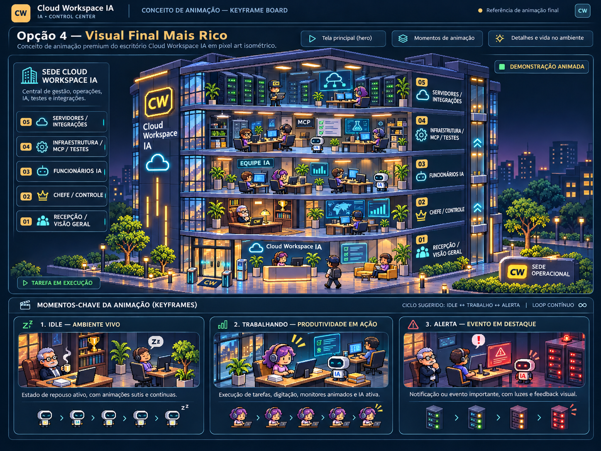
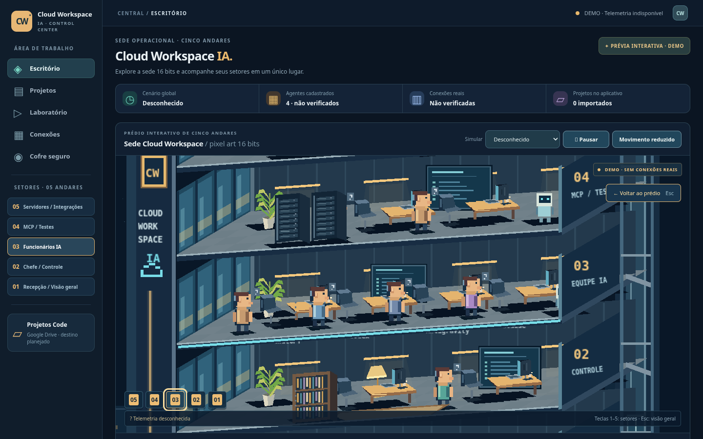

Referência artística — não é o software

Aplicação real — 1440×900

Aplicação real — setor ampliado

A esquerda é a referência artística estática; a direita é uma captura real do Chromium, com PixiJS 8. A referência nunca é usada como textura da cena. Esta comparação não comprova funcionamento Windows.


Preservados: cinco pisos, fachada oeste, elevador leste, cidade noturna, móveis e personagens separados, monitores voltados aos personagens. Diferenças restantes: densidade decorativa, sombras orgânicas, reflexos e vegetação são mais simples; sprites humanos e perspectiva precisam de revisão artística adicional. Não declarar fidelidade final premium.